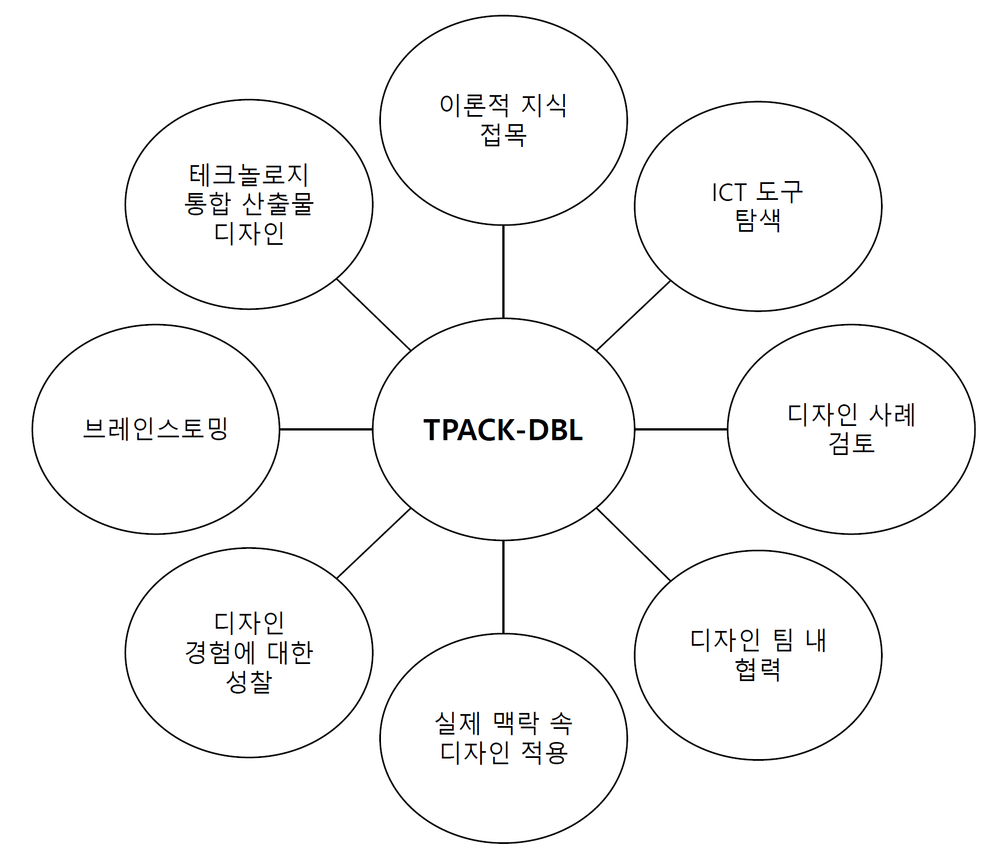

Lecture 1-1
교사의 AIㆍ디지털 역량
2025-12-29
Google DeepMind
vs.Lee Sedol
2016.3.13.

트랜스포머(Transformer)
“Attention is All You Need” (2017)
GPT
Generative 생성적
입력을 분류 및 분석하는 것이 아니라 새로운 텍스트를 생성할 수 있음
텍스트 뿐만 아니라, 이미지, 음성/오디오, 비디오, 코드, 멀티모달 생성
Pre-trained 사전학습된
Transformer 트랜스포머
학습 메커니즘: 딥러닝 신경망 구조
‘셀프 어텐션(self attention)’
TPACK: 개념
결합 영역
PCK(Pedagogical Centent Knowledge, 교수내용지식): 특정 내용을 효과적으로 가르치는 방법에 대한 지식
TCK(Technological Content Knowledge, 기술내용지식): 특정 기술이 어떤 방식으로 내용 지식으로 표현, 탐구, 적용할 수 있는지에 대한 이해
TPK(Technological Pedagogical Knowledge, 기술교수지식): 특정 기술이 교수ㆍ학습을 어떻게 강화 및 변형할 수 있는지에 대한 이해
TPACK(기술교수내용지식): 세 가지 요소가 통합된 상태, 특정 내용을 특정 교수법과 특정 기술을 활용해 효과적으로 가르치는 지식
TPACK: 적용
PCK (교수내용지식)
- 여러 나라의 인구 피라미드를 비교하도록 하여, 저출산과 고령화의 다른 원인을 토론하게 하는 수업
TCK(기술내용지식)
- GIS 소프트웨어(QGIS)를 활용하여 TFR을 지도 위에 시각화
TPK(기술교수지식)
TPACK(기술교수내용지식)
- 학생들이 전 세계 국가별 TFR을 시각화하고, 토론을 통해 지역적ㆍ세계적 맥락에서 저출산 문제를 분석 및 해결책을 모색하게 하는 프로젝트 수업
TPACK: 확장
AI-TPACK: Nign et al. (2024)
TPACK-Uotl: Sifyan et al. (2023)
TDL-TPACK: Cui and Zhang (2022)
DPACK: Thyssen et al. (2023)
AI Literacy TPACK: Ng et al. (2021)
TPACK-DBL 프레임워크
(Baran and Uygun, 2016, 49)
TPACK-DBL 프레임워크
디지털 제작 도구에 대한 이해와 활용 능력(디지털 역량)
복잡한 개념을 시각적이고 구조적으로 전달하는 능력(커뮤니케이션 역량)
분석적 사고 및 데이터 기반 수업 구현 능력(데이터 리터러시 + 기술력)
오픈 지식 생태계에의 기여(공유 및 협업 역량)